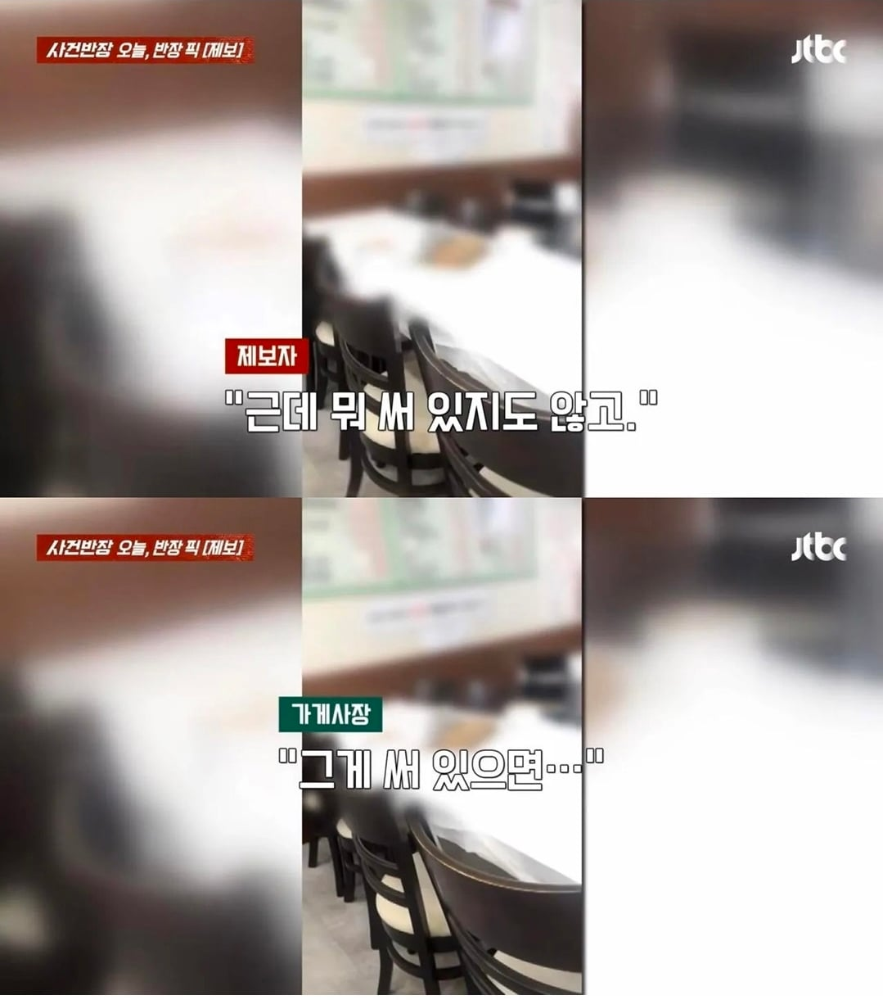
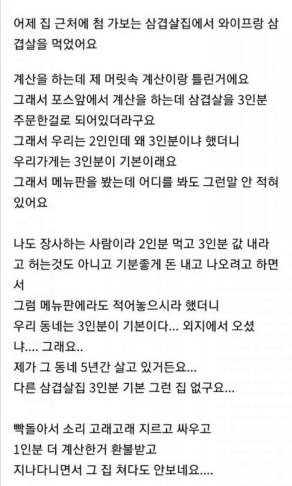
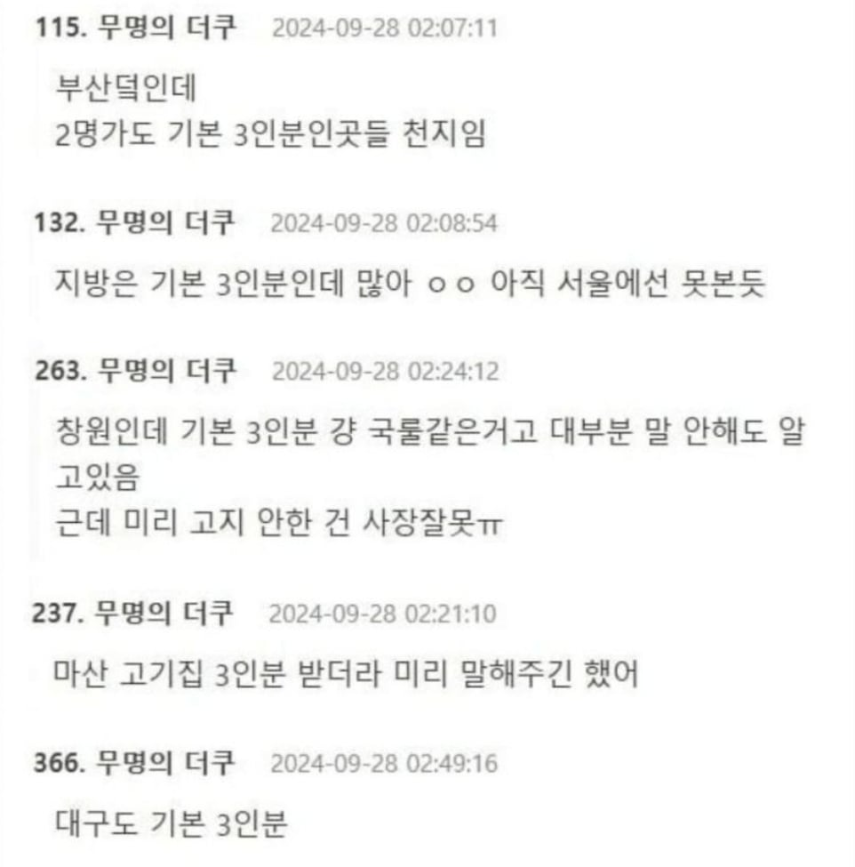
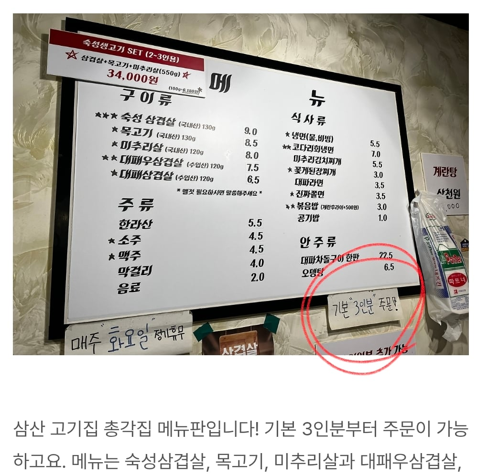

그런데 의외로 이런 고깃집이 종종 있다고 함




그런데 의외로 이런 고깃집이 종종 있다고 함



비싸게 쳐 받고싶으면 1인분 용량과 가격을 올려
난 180그람 밑으로 파는데는 그냥 바로 거름
박리다매할 자세가 안되어있음 먹으면서도 기분나쁨
기본이 3인분인 룰이 있을 수 있어... 있을 수 있지...
그 룰을 모르는 사람은 처음에 2인분 달라고 했을텐데
그러면 그 때 룰을 설명했어야지
말로는 알겠습니다~ 하고 3인분 내놓고 3인분 가격 달라고 하면... 강매잖아
9천원이면 싸긴하네 서울은 보통 18000원씩하지않나?